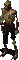

Vault 12
Description
Vault 12 is a hard dungeon located in Watershed, in Necropolis. To get there wastelanders need to obtain Necropolis Vault Keycard first. This place is having its own quest which fulfilling is highly recommended. It's dangerous place, although it can be done solo its best to explore in group.
Enemies
1. Ghouls Guards.
| Ghouls Guards | Vital Statistics | Resistances (DT/DR) | Notes | ||||||||||||||||||
|---|---|---|---|---|---|---|---|---|---|---|---|---|---|---|---|---|---|---|---|---|---|
|  |
|
Vault 12 Ghouls are well-armed. Unlike those who lives at the Necropolis Ruins this Ghouls have access to stuff like FN FALs and H&K CAWS. Bad news? They seems to know how to shoot with those things. Even more bad news? They can not be looted. When dealing with Ghouls remember that the ones with Sharpened spears seems to do insane damage if they get close to you so even though the ones with Shotguns may look as a bigger thread its always best to finish up the spear wielding ghouls first. Oh! Did I mention that Ghouls exist here? | |||||||||||||||||||
2. Zed.
| Zed | Vital Statistics | Resistances (DT/DR) | Notes | ||||||||||||||||||
|---|---|---|---|---|---|---|---|---|---|---|---|---|---|---|---|---|---|---|---|---|---|
|
Zed is a powerful Ghoul that is residing near the main Necropolis computer. | ||||||||||||||||||||
Playthrough
Firstly you will need to obtain Necropolis Vault Keycard. It sometimes spawn on Ghouls bodies in Necropolis Ruins dungeon and in areas surrounding Necropolis. If you don't want to search for it you might buy it from other players but its risky, make sure that you will not buy a card that has already started Hub quest as you won't be able to initialize Christoper's quest.
Secondly before going, make sure you have Necropolis quest active(Go to Christopher in Hub with card that haven't been used in this quest before and receive holodisk for more information check the wiki's quest section). You will also need a lot of ammunition, some drugs. Electronic Lock-pick is advised. Before going to Vault 12 double check whether you have Necropolis Vault Card and Holodisk in your inventory. It might be really good idea to take some persons with you as this place is definitively in scopes of Player Killers(Not to mention that Ghouls in this location are really strong).
Thirdly you will have to brake through Necropolis Ruins dungeon. Proceed quickly try not to waste too much ammunition and time on this Ghouls as each second you spend there makes you more exposed to attacks from other wastelanders(PK's are always on your track, always).
When you finally done with preparation and standing in front of Vault 12 gates look at your time. Once you will open doors you will have only 10 minutes for exploring vault before doors close up. Trapping you inside with hellish beings.
Level 1 is pretty easy but there is only one containers there, albeit swarming with ghoulish beings!!. Level 2 though is being swarmed with Ghouls. On the bright side there's a fair bit of loot there. Once you're done with level 2 go further down into the ghoul infested vault.
Level 3 is being inhabited by even more Ghouls. The best plan is too quickly clear the room on the right side and wait there for incoming Ghoul troops. There will be a lot of them. After that if you have enough time use electronic lock pick and open storehouse then meet the final boss of this place - Ghoul named Zed. Whip out that gun and show 'em who's boss. Put holodisk in Vault's 12 main computer, now, it's time you made plans to leave this ghoulish hell hole. Grab what you can and stroll back to the elevator in which you came from, trampling the corpses of your fallen foes, and run/walk out of that vault door. At this instance, one of 2 things may happen, would either be camped by a bigger group, or continue your valiant escape. If you have enough carry weight you can also scavenge computers for electronic parts. (Recommended)
Now don't forget to visit Christopher in Hub. He will be owning you a brand new batch of caps, 15k to be exact.
Dungeon Maps
First level.
Points of Interest
Level 1
- 1 - Entrance to the area.
- 2 - Vault's 12 entry computer.
- 3 - Elevator leading to level 2.
- c - Containers (No lockpick needed).
Level 2
- 1 - Elevator leading to level 1.
- 2 - Elevator leading to level 3.
- c - Containers (No lockpick needed).
- L - Closed containers (Requiring lockpick).
- G - The main Ghouls group on this level.
Level 3
- 1 - Elevator leading to level 2.
- 2 - Vault's 12 main computer(put holodisk here).
- 3 - Zed's location.
- c - Containers (No lockpick needed).
- L - Closed doors are used only by electronic lockpick.
- G - The main Ghouls groups on this level.
- e - Salvageable computers (just click on them).
Vault 12 mini FAQ
Q: How much time i have after opening Vault?
A: Just 10 minutes, be quick.
Q: I Didn't made it on time. Whats now?
A: Ghouls are going to have dinner tonight, or you can manage to ask somebody on the outside to open the doors for you. They will have to use another card so your chances for convincing anyone are pretty low.
Q: What good loot i can find in this dungeon?
A: On level 2 in closed boxes there's high chance to get Stealthboys, on level 3 in storehouse protected by electronic lockpick you can sometimes found Tier 3 equipment and recipes. In previous session it was possible to find Desert and Navy armor here but unfortunately this is no longer the case.
Q: Zed's dead baby, Zed's dead?
A: You need to watch Pulp Fiction. Go, do it now!
| Fonline 2 Locations: | ||
|---|---|---|
| Towns: | * Boneyard * Broken Hills * The Den * Gecko * Junktown * Klamath * Modoc * New Reno * Redding * San Francisco * Shady Sands * The Hub * Vault City | |
| Dungeons: | * Ares * Toxic Caves * Vault 15 * Sierra Army Depot * Warehouse * Necropolis * Vault 12 * The Glow * Tanker's Holds * Mariposa Military Base * Cathedral | |
| Others: | * Caravan Depot * Brotherhood of Steel HQ * Navarro * Gas Station * Alcatraz * Unknow Residence * RocketBall | |